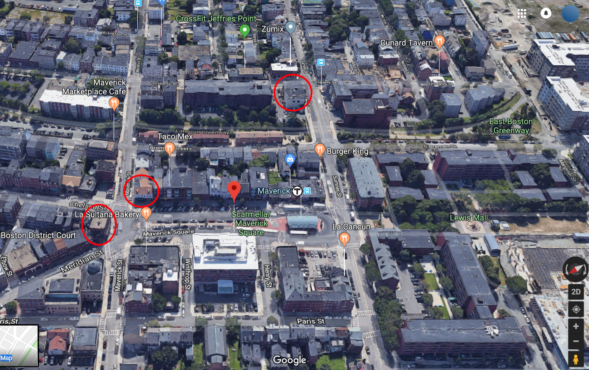

Word Count: ~2800
The venue’s general layout follows a classic “shoebox” design used in classic concert halls to achieve maximum emotional impact [12], with several major modifications in order to better accommodate modern amenities. Concert halls which have used the shoebox design to great effect include Vienna Musikverein [9] and Berlin Konzerthaus, which serves as an additional appeal to international artists.
While the concept of a gently sloping floor slowly rising to take up half of the room’s height is roughly adhered to, there is a cut out section in front of the stage dedicated to standing room - this allows for more active concert participation for concert nights, and a dedicated dance floor for any potential club nights.
The venue’s dimensions should be proportional to the following Length : Width : Height ratio - 2.25 : 1.25 : 1. This allows for the venue to avoid standing waves which negatively impact sound quality due to attenuation of certain frequencies. A feasible size which follows this pattern is 56.25 meters in length x 31.25 meters in width x 25 meters in height, which allows for a capacity of approximately 1,500 attendees between the standing and sitting areas, without considering the possibility of adding a second floor in the future - for the sake of this proposal, this idea is forgone, in order to keep the acoustics simple.
Aside from taking into account room dimensions, various sound treatment mechanisms must be implemented in order to avoid ungodly humming and maximize sound fidelity. The floors would be covered in heavy carpets in the seating area for maximum absorption; this solution would not work for the pit/dance floor area, however, which should be simple concrete, but the acoustic effects of this choice should be minimized with proper application of diffusers and bass traps on the walls surrounding the area. This acoustic treatment would persist throughout the room, with asymmetric diffusers in the back of the hall, and bass traps in each corner of the room - this prevents sound leakage and shuts down a good amount of potential standing waves that would otherwise adversely affect the sound quality of the room [3]. For the sake of safety and having a good reference point, the mixers’ booth would be overlooking the pit area; this prevents any irresponsible audience members from climbing over the guardrail surrounding this area and injuring themselves/others in the audience.
East Boston, by Maverick Square is the perfect spot for a new musical venue. This neighborhood has been booming in popularity in recent years, and is in need of additional investment. The area is underserved in terms of musical venues - the closest venue of a comparable size, the House of Blues, requires a public transportation transfer, or a 20 minute drive via a toll road. By adding a cultural attraction to this newly gentrifying region, the development of the area can be further enhanced, and its residents better served. Furthermore, the location makes the venue very attractive to international acts, due to the proximity to the airport (just one Blue Line stop away.) This appeal to international artists serves as a reminder of Boston’s immigrant-rich roots.
[7]
Some potential points of interest are marked above. We would aim for street corners, not too close to residential areas to avoid angering residents with noise leaks at night. Very close proximity to the T is ideal.
As with most dedicated music venues, the Maverick Music Hall would have various alcoholic options for patrons to enjoy. Two bars would be placed at 45-degree angles from the stage, to the side of the platform on either side of the pit. This would allow patrons to enjoy both the alcohol and the concert at once, and further improving acoustics by promoting asymmetric and non-parallel walls in certain areas. A further possibility, given the legalization of cannabis, would be to provide guests with low-dose edibles as an alternative method of intoxication [1]. Given that both forms of intoxication have the same legal age, this would only be a matter of obtaining the appropriate licensing.
The type of performers which this venue aims to primarily target are international artists who would like Boston as a possible place to start their tour, or would like to perform in a more accessible part of Massachusetts without having to work with the House of Blues. This venue would serve artists of all genres due to the versatility of its design. The venue’s proximity to the airport aids in its accessibility to international acts.
Some examples of artists who have either had high turnout in Wilbur, or would consider Maverick as an alternative to their current venue of choice are:
In order to thrive in Boston, the Maverick will need to capitalize on the weaknesses of our major competitor, House of Blues. Below is a list of frequent complaints about the House of Blues and our proposed solutions:
The coat check at the Maverick will be free of charge (1 item per guest). Also, any free workers (such as clean staff) will assist the entrance operators at the coat check at the end of the show to facilitate coat retrieval, thus lowering wait times. This will lower our revenue; to make up for it, customers will be encouraged (but not forced) to tip if they leave their coat. This will lower volume of items (people will be too frugal to pay, but will feel bad to not tip, and so will not leave their coat without harming our reputation). Also, the tip money will be spread among the employees, increasing employee happiness.
We pay our security staff much better than the domestic average [11]. Rude or indifferent security won’t be hired. The customer satisfaction is worth the loss in profit.
We cannot avoid people lining up before doors open, but we can do our best to make this time less painful. Our cheery security staff can chat with guests before doors open. We would also consider investing in an awning or outdoor heating elements to maximize customers' comfort during fall, winter, and spring.
Staff will not work every day: a flexibility in schedule is anticipated, especially for the less demanding positions. The numbers of each staff are totals, and a subset of that total will work each day. Salaries are backed by figures on Glassdoor [6].
The Maverick Music Hall will hire the following staff:
General Manager (2)The managers are responsible for the general state of the Maverick and its employees. For this domain, it is expected that the managers would be in charge of scheduling employees, organizing workplace flow and feel, and ensuring that guests are treated well. The managers are the ultimate face of the Maverick.
Number per workday: 2
Expected Total Annual Salary: $200,000
Expected Individual Annual Salary: $100,000
Bouncer (8)Bouncers are responsible for the security of the establishment. They ensure that everybody who enters the Maverick have done so in a reasonable, and legal, manner. This includes age-checking at the door, both for drinking age (the classic X on the hand and wristband tactic works fine here) and entrance age (some concerts have an age minimum). Bouncers will need to be strict to comply with Massachusetts and Boston law. They also will be responsible for removing unruly guests who may cause discomfort or harm to others and for guarding the stage should any wild guest try to jump onto it.
Number per workday: 6
Expected Total Annual Salary: $420,000
Expected Individual Full-Time Annual Salary: $70,000
Expected Individual Part-Time Annual Salary: $52,000
Bartender (8)Bartenders reside at the bars and are solely responsible for making and serving drinks and potentially edibles, depending on how easy it becomes to get the edible serving licence equivalent. Bartenders will need to know how to make a plethora of drinks to the customers’ liking. They will also need to be able to identify when a customer has had enough. Should edibles become feasible, they will also need to monitor edibles consumption and inform of the potential health and safety hazards that may come of mixing cannabis and alcohol. Bartenders will keep all of their tips.
Number per workday: 6
Expected Total Annual Salary: $360,000
Expected Individual Full-Time Annual Salary: $60,000
Expected Individual Part-Time Annual Salary: $45,000
Cleaning Staff (8)The cleaning staff will be required to restore the Maverick to pristine condition after every event. Depending on the intensity of the show, the dance/mosh/standing area can get very dirty; it will need to be completely cleaned before the doors open for the next show. They will also be in charge of the general state of the building, including bathroom cleanliness, garbage maintenance, etc.
Number per workday: 5
Expected Total Annual Salary: $200,000
Expected Individual Full-Time Annual Salary: $40,000
Expected Individual Part-Time Annual Salary: $25,000
Entrance Operator (12)Entrance operators will be in charge of managing the influx of people when doors open. They will assist in scanning tickets, managing coat-check, guiding customers to their seats, and operating merchandise booths.
Number per workday: 8
Expected Total Annual Salary: $400,000
Expected Individual Full-Time Annual Salary: $50,000
Expected Individual Part-Time Annual Salary: $33,000
Promoters (3)Promoters for the Maverick will be solely social media-based. They will manage the Maverick’s social media presence and advertise future events. They will also reach out to rising talent for gigs, organizing local shows on days with downtime from larger acts.
Number per workday: 3
Expected Total Annual Salary: $150,000
Expected Individual Full-Time Annual Salary: $50,000
The listeners that would attend our music venue would be people that are at our place solely for the musical performance (as opposed to a coffee shop, where music is an accompaniment to beverages and food). Since we have a variety of musical performances, varying in talent and genre for our venue, the listeners vary as well. There will be hardcore fans, fans that are average listeners, and audience members that aren’t initially fans of the group but want to check out the band/performance. But, the good thing is that since our venue is mostly based off of ticket sales, the audience that comes to the show will be dedicated to the performance because they had to specifically buy tickets to listen. Having a variety of genres creates a larger pool of listeners, which in turn increases the amount of revenue we generate at our venue.
One of the ways that our venue will impact the community is the allowance of small, local acts from the Boston Area. We will run less staff and have shows during quieter times so that our biggest acts will generate the most revenue, but nevertheless the small acts will get a chance to perform in front of a live audience. Depending on the talent level, we may want to possibly line them up as a warm up act for the bigger performances we have so that we can continue to promote the growth of music in the Boston Area.
Another way we will impact the community is by running a non-profit organization that promotes music in youth in lower income areas of Boston. This will be similar to the House of Blues Boston’s “House of Blues Moving Forward Foundation”, as that foundation has been running smoothly for the past 25 years [8]. Our foundation will be determined to educate young kids in music by running fundraisers, donating musical instruments, as well as possibly hosting small events in the venue. This would be a great way to increase our impact in the community as well as affect future generations musically.
In order to properly run a profitable enterprise it is important to understand the basic layouts of how profit/revenue are created. Revenue is created anytime that a consumer purchases your product or service in exchange for money. Profits are created when the cost of producing your service/product costs less than than the consumers pay for it. Now that we understand where our profit is going to come from, the following business plan will be outlined in a way that consistently tries to minimize costs and maximize revenue.
Almost all profitable businesses have similar strategies and plans that help to reduce the costs of operating. By researching companies that we believe are in the market we are trying to enter, we can approximate about how much money the company will require for funding. It is important to note these costs will could be paid over many years, for example, the rent for our venue will take multiple years to pay off completely.
The most impactful purchase our venue will have to buy will be the lease for the space we want to use. Using statistics gathered through local realtors, it can be safely estimated that a competitive buying price for our venue will be around $510 per square foot. With this in mind, it can be assumed that our venue will have to spend between $475,000-500,000.
The next major category within costs of operations is Equipment. As a music venue, we would have to spend a large amount of money before the venue even opened in order to prepare for opening night. This large amount of expenses could be risky because our venue will have no source of consistent income at this point, however, we will aim to break even as soon as possible. The costs for equipment are harder to estimate because every venue is different, however, a close approximation could be around $500,000 for the first year due to needing to buy the equipment, and $100,000 for every year after that to maintain it. [10].
Finally, supplies, food, and drink are high demand items at any music venue. Our venue will have 2 fully stocked bars serving drinks including draft beers, wine, cocktails, and specialty drinks. I believe that a conservative estimate would be around $250,000 a year [2]. It is currently difficult to estimate the costs of cannabis, as it is a nascent industry in Massachusetts.
In conclusion, we can see that in the first year this venue will require around $2,850,000 in order to open. Every year after the inaugural, costs will be expect to decrease to around $2,450,000.
Revenue from this venue will be mainly tied to consumer purchases including tickets, drinks, and other “experiential” costs like CDs or band merchandise. It is important to note that having a revenue stream reliant upon consumer activity is riskier than some other revenue options, however, it can also be one of the most profitable areas to exploit.
Ticket prices/cover charges will be priced on an individual basis depending upon the expected crowd size and level of talent performing. Higher tier bands will bring more people to the venue resulting in a more profitable night for the company. Prices will reflect the estimated amount of people in attendance, the cost of the artist, and expected revenue from drinks and ticket sales.
Also, we could rent out the space to potential buyers for a limited amount of time to allow other people/companies to host their own parties or events. Our space could be perfect for corporate parties, children’s events, and more. Having two different options of revenue would make our business plan much less risky. Also, it would make our space much more efficient because then it would be in use during the day and on the weekends. We would have to add more staff to handle the stress of a long hour operation, however, the market could be lucrative.
By using House of Blues as an approximation for size of venue, it can be estimated that our venue will have a maximum occupancy of appoximately 2,500-3,000 people. If we were to sell 4,000 tickets at $20 apiece every weekend [4], we would generate around $4,160,000 in ticket sales within the first year. Including drinks and other sources of revenue, our company could see over $5,000,000 in profit within the first year of operations.
[1] A Beginner's Guide To Marijuana Edibles in Massachusetts | Nik DeCosta-Klipa - https://www.boston.com/news/local-news/2018/05/29/massachusetts-marijuana-edibles
[2] A Straightforward Guide To Bar Management For Music Venues | https://www.eventbrite.com/blog/bar-management-for-music-venues-ds00/
[3] Acoustic Performance | http://www.sustainableconcrete.org.nz/page/acoustic-performance.aspx
[4] Secrets to Setting Event Ticket Prices to Maximize Sales | Susan Gunelius - https://www.attendstar.com/secrets-setting-event-ticket-prices-maximize-sales/
[5] Company Salaries | https://www.glassdoor.com/Salaries/index.htm
[6] Full Compass Systems - Pro Audio, Video & Lighting Equipment Experts | https://www.fullcompass.com/
[7] Google Maps | https://maps.google.com/
[8] House of Blues Moving Forward | https://hobmusicforward.org/about-us/
[9] How Concert Halls Enhance Crescendos | Trevor Cox - https://www.huffingtonpost.com/trevor-cox/how-concert-halls-enhance-crescendos_b_5483292.html?ec_carp=174063177174826294
[10] Payscale: Average House of Blues Salary | https://www.payscale.com/research/US/Employer=The_House_of_Blues/Salary
[11] Salary: Doorman | https://www.glassdoor.com/Salaries/doorman-salary-SRCH_KO0,7.htm
[12] 'Shoe-box Shaped' Concert Halls Make Music More Emotional | Hannah Furness - https://www.telegraph.co.uk/news/2016/03/24/shoe-box-shaped-concert-halls-make-music-more-emotional/